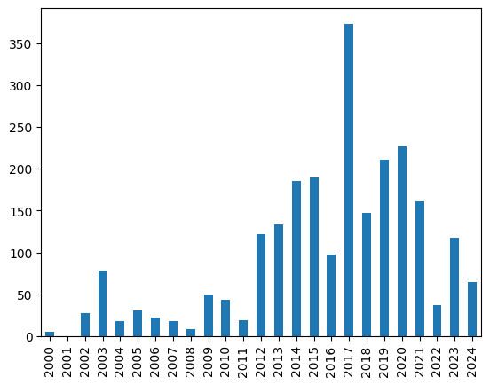
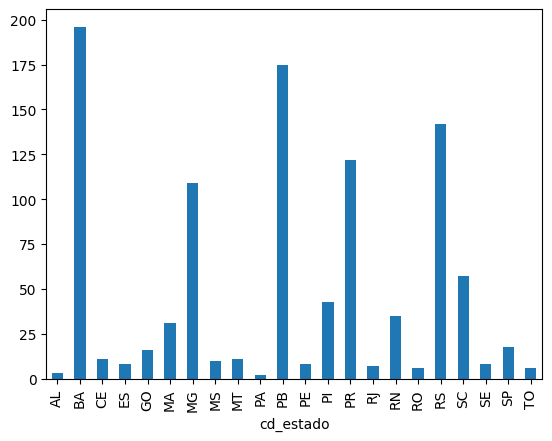
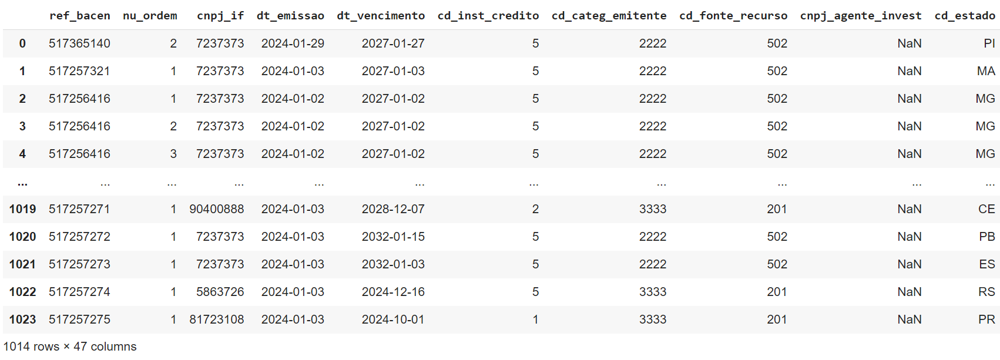
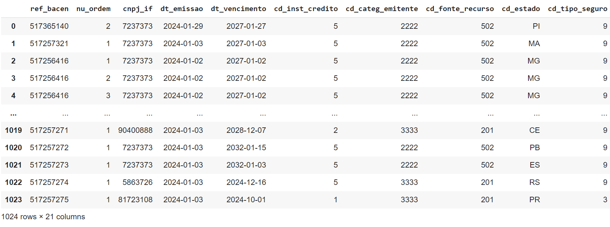

2.3. A Linguagem de Programação Python
A linguagem Python foi criada originalmente por Guido Van Rossum [21]. Atualmente, seu desenvolvimento é coordenado através de uma fundação chamada Python Software Foundation, sob uma licença de código aberto. Pode ser classificada como uma linguagem de script, orientada a objetos e interpretada. A implementação oficial encontra-se disponível para as plataformas computacionais mais comuns no site https://www.python.org/.
O core desta linguagem, descrito em [22], contém a gramática com as regras sintáticas e semânticas da linguagem, além das abstrações básicas tais como tipos de dados numéricos, sequências, dicionários, estruturas de repetição, comandos de decisão, funções, construtor de novos tipos (class), blocos para tratamento de exceções, entre outras abstrações.
A biblioteca padrão (standard library), descrita em [23], fornece inúmeros tipos de dados e funcionalidades, como tipos para manipulação de data e hora, manipulação de arquivos, comunicação em rede, entre outros.
Python apresenta as seguintes características:
Possui um sistema de tipos dinâmicos, ou seja, realiza checagem de tipos durante a execução dos programas.
Gerenciamento automático de memória (garbage collector).
A linguagem contém um conjunto básico de abstrações poderosas: sequências (listas e tuplas), dicionários (hashes), funções e classes.
Suporta orientação a objetos.
Possui mecanismo para tratamento de exceções.
Permite expressar conceitos e computações em poucas linhas de código.
Oferece uma notação inspirada na linguagem Haskell conhecida como list comprehensions, que é bastante poderosa para criar objetos como listas e dicionários.
Possui uma grande quantidade de bibliotecas de código aberto que cobrem um grande espectro de funcionalidades.
É extensível.
Suporta diversos paradigmas de programação: estruturado, orientado a objetos, funcional.
2.3.1. Computando NDVI
O índice de vegetação por diferença normalizada, conhecido como Normalized Difference Vegetation Index (NDVI), pode ser computado usando a reflectância das bandas do vermelho (red) e infravermelho próximo (nir), como mostrado na Equação 2.1:
Nota
A Equação 2.1 produz valores que variam entre \(-1.0\) a \(1.0\).
Dica
Para mais detalhes sobre o NDVI, consulte o Capítulo 11 em [24].
Exercício: Escrever um programa para computar o NDVI a partir dos valores de reflectância: \(\rho_{red}=168\) e \(\rho_{nir}=2346\).
Solução:
1red = 168
2
3nir = 2346
4
5ndvi = (nir - red) / (nir + red)
6
7print(red, nir, ndvi)
2.3.2. Pandas

O Pandas fornece duas estruturas de dados básicas: Series e DataFrame, ambas apoiadas na estrutura ndarray da biblioteca NumPy. Para estas estruturas, existem diversas operações de alto nível disponíveis, tais como agregação de valores e visualização básica através da Matplotlib.
Um objeto do tipo Series representa um vetor (ou array unidimensional) capaz de armazenar qualquer tipo de dado, como números inteiros, strings ou objetos como data e hora. Uma série possui dois eixos (axis), um usado para rotular cada valor do vetor (linhas) e outro para rotular os valores das séries (colunas). Os rótulos do eixo-0 funcionam como um índice para os valores da série. O rótulo do eixo-1 se refere à coluna com os valores da série. A Tabela 2.1 apresenta as características dessa estrutura de dados. Repare que há um eixo numérico na primeira coluna, com valores no intervalo [0, 4], que forma a base de indexação dos valores da série (nomes de munícipio), e cuja coluna (eixo-1) possui um rótulo chamado reb_bacen.
ref_bacen |
|
|---|---|
0 |
517365140 |
1 |
517257321 |
2 |
517256416 |
3 |
517256416 |
4 |
517256501 |
O segundo tipo de estrutura introduzido pelo Pandas é o DataFrame, que representa uma matriz bidimensional, mais parecida com uma tabela, com capacidade de lidar com tipos heterogêneos, conforme mostrado na Tabela 2.2. Essa estrutura possui eixos rotulados (linhas e colunas). O eixo-0, dos índices, refere-se à primeira coluna, com os rótulos no intervalo [0, 4]. Esses valores podem ser usados para acessar os elementos de cada linha. O eixo-1, das colunas, possui os rótulos: ref_bacen, dt_emissao, dt_vencimento, cd_estado e vl_parc_credito. Os rótulos do eixo-1 se referem à identificação das séries das colunas.
ref_bacen |
dt_emissao |
dt_vencimento |
cd_estado |
vl_parc_credito |
|
|---|---|---|---|---|---|
0 |
517365140 |
2024-01-29 |
2027-01-27 |
PI |
4000.00 |
1 |
517257321 |
2024-01-03 |
2027-01-03 |
MA |
12000.00 |
2 |
517256416 |
2024-01-02 |
2027-01-02 |
MG |
6000.00 |
3 |
517256416 |
2024-01-02 |
2027-01-02 |
MG |
2500.00 |
4 |
517256501 |
2024-01-03 |
2025-01-02 |
SC |
61542.18 |
5 |
517256502 |
2024-01-03 |
2025-01-02 |
SP |
13327.57 |
6 |
517256503 |
2024-01-03 |
2024-12-23 |
PE |
44986.50 |
7 |
517256507 |
2024-01-03 |
2024-12-20 |
MT |
38666.07 |
8 |
517256511 |
2024-01-03 |
2024-12-15 |
RS |
5395.90 |
9 |
517256511 |
2024-01-03 |
2024-12-15 |
RS |
9216.72 |
2.3.3. Usando o Pandas
Por convenção importamos as funcionalidades do Pandas da seguinte forma:
In [1]: import pandas as pd
2.3.4. Criando uma Série
Vamos criar uma série semelhante aos dados apresentados na Tabela 2.1, porém com os índices representados pelas letras de a a e, conforme o trecho de código abaixo:
In [2]: dados = [
...: '517365140',
...: '517257321',
...: '517256416',
...: '517256416',
...: '517256501',
...: ]
In [3]: indices = [ 'e', 'b', 'd', 'c', 'a' ]
In [4]: serie = pd.Series(data=dados, index=indices, name='Operações')
No ambiente de computação interativa do Jupyter, podemos apresentar os valores dessa série simplesmente criando uma célula com a seguinte expressão:
In [5]: serie
Out[5]:
e 517365140
b 517257321
d 517256416
c 517256416
a 517256501
Name: Operações, dtype: object
2.3.5. Selecionando Valores da Série
Podemos utilizar a função head para obter valores da série a partir do seu início:
In [6]: serie.head(2)
Out[6]:
e 517365140
b 517257321
Name: Operações, dtype: object
A função tail permite obter valores ao final da série:
In [7]: serie.tail(2)
Out[7]:
c 517256416
a 517256501
Name: Operações, dtype: object
O operador [] (operador de indexação) permite acessar elementos específicos ou partes da série:
In [8]: serie['a']
Out[8]: '517256501'
In [9]: serie[0:3]
Out[9]:
e 517365140
b 517257321
d 517256416
Name: Operações, dtype: object
In [10]: serie[-2:]
Out[10]:
c 517256416
a 517256501
Name: Operações, dtype: object
O atributo loc permite acessar grupos de valores da série (linhas) através de rótulos ou por um array de valores lógicos:
In [11]: serie.loc[ ['a','b'] ]
Out[11]:
a 517256501
b 517257321
Name: Operações, dtype: object
Vamos usar um array de valores lógicos para selecionar linhas alternadas da série através do atributo loc:
In [12]: serie.loc[ [True, False, True, False, True] ]
Out[12]:
e 517365140
d 517256416
a 517256501
Name: Operações, dtype: object
A propriedade iloc permite a seleção dos valores da série de maneira posicional, isto é, utilizamos números inteiros para especificar uma ou mais linhas a serem selecionadas. De maneira semelhante à propriedade loc, aceita um array de valores lógicos para seleção:
In [13]: serie.iloc[ [1, 3] ]
Out[13]:
b 517257321
c 517256416
Name: Operações, dtype: object
2.3.6. Acessando a Estrutura de uma Série
Para acessar o eixo dos rótulos associados aos valores da série, utiliza-se o atributo index:
In [14]: serie.index
Out[14]: Index(['e', 'b', 'd', 'c', 'a'], dtype='object')
Os valores da série podem ser acessados na forma de um ndarray do NumPy através do atributo values:
In [15]: serie.values
Out[15]:
array(['517365140', '517257321', '517256416', '517256416', '517256501'],
dtype=object)
O retorno do atributo values é um numpy.ndarray, conforme podemos ver no exemplo abaixo:
In [16]: type(serie.values)
Out[16]: numpy.ndarray
2.3.7. Ordenando os Valores de uma Série
Podemos ordenar a série pelos seus valores através da operação sort_values:
In [17]: serie.sort_values(ascending=True)
Out[17]:
d 517256416
c 517256416
a 517256501
b 517257321
e 517365140
Name: Operações, dtype: object
Ou, podemos ordenar a série pelos rótulos do índice dos valores:
In [18]: serie.sort_index()
Out[18]:
a 517256501
b 517257321
c 517256416
d 517256416
e 517365140
Name: Operações, dtype: object
Note que as duas operações acima criam novas séries ordenadas. Para alterar a própria série, sem criar uma cópia, é necessário utilizar o parâmetro inplace:
In [19]: serie.sort_values(ascending=True, inplace=True)
In [20]: serie
Out[20]:
d 517256416
c 517256416
a 517256501
b 517257321
e 517365140
Name: Operações, dtype: object
2.3.8. Plotando uma Série
Podemos construir gráficos rapidamente a partir das séries. O tipo Series possui uma operação geral denominada plot. O trecho de código abaixo mostra como utilizar esta operação para apresentar um gráfico de barras com o número de empreendimentos iniciados em cada ano, ao longo do período de 1996 a 2024.
In [21]: ano = [ 2000, 2001, 2002, 2003, 2004, 2005, 2006, 2007, 2008, 2009, 2010, 2011, 2012, 2013, 2014, 2015, 2016, 2017, 2018, 2019, 2020, 2021, 2022, 2023, 2024 ]
In [22]: num_empreendimentos = [ 5, 0, 28, 78, 18, 31, 22, 18, 8, 50, 43, 19, 122, 134, 185, 190, 97, 373, 147, 211, 227, 161, 37, 118, 65 ]
In [23]: serie_empreendimentos = pd.Series(data=num_empreendimentos, index=ano, name='#Empreendimentos x Ano')
In [24]: serie_empreendimentos
Out[24]:
2000 5
2001 0
2002 28
2003 78
2004 18
2005 31
2006 22
2007 18
2008 8
2009 50
2010 43
2011 19
2012 122
2013 134
2014 185
2015 190
2016 97
2017 373
2018 147
2019 211
2020 227
2021 161
2022 37
2023 118
2024 65
Name: #Empreendimentos x Ano, dtype: int64
In [25]: %matplotlib inline
In [26]: import matplotlib.pyplot as plt
In [27]: serie_empreendimentos.plot.bar()
Saída:
{kind=link}
Nota
Por padrão, o Pandas utiliza a Matplotlib para gerar os gráficos. No entanto, é possível utilizar outras bibliotecas.
Nota
Consulte aqui outras opções de construção de gráficos a partir de uma série.
Nota
Para saber as demais propriedades e operações disponíveis para a estrutura Series, consulte a seguinte documentação: pandas.Series.
2.3.9. Criando um DataFrame
Para compreender a estrutura de um DataFrame, vamos criar um, baseando-se nos dados da Tabela 2.2.
In [28]: ref_bacens = [ '517365140', '517257321', '517256416', '517256416', '517256501', '517256502', '517256503', '517256507', '517256511', '517256511' ]
In [29]: dts_emissao = [ '2024-01-29', '2024-01-03', '2024-01-02', '2024-01-02', '2024-01-03', '2024-01-03', '2024-01-03', '2024-01-03', '2024-01-03', '2024-01-03' ]
In [30]: dts_vencimento = [ '2027-01-27', '2027-01-03', '2027-01-02', '2027-01-02', '2025-01-02', '2025-01-02', '2024-12-23', '2024-12-20', '2024-12-15', '2024-12-15' ]
In [32]: cd_estados = [ 'PI', 'MA', 'MG', 'MG', 'SC', 'SP', 'PE', 'MT', 'RS', 'RS' ]
In [33]: vls_parc_credito = [ '4000.00', '12000.00', '6000.00', '2500.00', '61542.18', '13327.57', '44986.50', '38666.07', '5395.90', '9216.72' ]
In [34]: dados = {
...: 'ref_bacen': ref_bacens,
...: 'dt_emissao': dts_emissao,
...: 'dt_vencimento': dts_vencimento,
...: 'cd_estado': cd_estados,
...: 'vl_parc_credito': vls_parc_credito
...: }
In [35]: df = pd.DataFrame(data=dados)
In [36]: df
Out[36]:
ref_bacen dt_emissao dt_vencimento cd_estado vl_parc_credito
0 517365140 2024-01-29 2027-01-27 PI 4000.00
1 517257321 2024-01-03 2027-01-03 MA 12000.00
2 517256416 2024-01-02 2027-01-02 MG 6000.00
3 517256416 2024-01-02 2027-01-02 MG 2500.00
4 517256501 2024-01-03 2025-01-02 SC 61542.18
5 517256502 2024-01-03 2025-01-02 SP 13327.57
6 517256503 2024-01-03 2024-12-23 PE 44986.50
7 517256507 2024-01-03 2024-12-20 MT 38666.07
8 517256511 2024-01-03 2024-12-15 RS 5395.90
9 517256511 2024-01-03 2024-12-15 RS 9216.72
2.3.10. Selecionando Colunas de um DataFrame
Para selecionar os valores da primeira coluna, rotulada com a string ref_bacen, podemos utilizar o operador [] (operador de indexação) como mostrado abaixo:
In [37]: df['ref_bacen']
Out[37]:
0 517365140
1 517257321
2 517256416
3 517256416
4 517256501
5 517256502
6 517256503
7 517256507
8 517256511
9 517256511
Name: ref_bacen, dtype: object
A mesma seleção pode ser realizada com o uso do operador .:
In [38]: df.ref_bacen
Out[38]:
0 517365140
1 517257321
2 517256416
3 517256416
4 517256501
5 517256502
6 517256503
7 517256507
8 517256511
9 517256511
Name: municipio, dtype: object
Múltiplas colunas podem ser selecionadas. Podemos usar uma lista para especificar os rótulos das colunas desejada na seleção:
In [39]: df[ ['ref_bacen', 'cd_estado' ] ]
Out[39]:
ref_bacen cd_estado
0 517365140 PI
1 517257321 MA
2 517256416 MG
3 517256416 MG
4 517256501 SC
5 517256502 SP
6 517256503 PE
7 517256507 MT
8 517256511 RS
9 517256511 RS
Podemos usar o método filter para selecionar colunas baseada em seus nomes ou rótulos:
In [40]: df.filter(like='dt')
Out[40]:
dt_emissao dt_vencimento
0 2024-01-29 2027-01-27
1 2024-01-03 2027-01-03
2 2024-01-02 2027-01-02
3 2024-01-02 2027-01-02
4 2024-01-03 2025-01-02
5 2024-01-03 2025-01-02
6 2024-01-03 2024-12-23
7 2024-01-03 2024-12-20
8 2024-01-03 2024-12-15
9 2024-01-03 2024-12-15
Nota
Além do parâmetro like, podemos usar uma expressão regular através do parâmetro regex.
2.3.11. Acessando a Estrutura de um DataFrame
Para acessar os índices ou rótulos das linhas, podemos utilizar a propriedade index:
In [41]: df.index
Out[41]: RangeIndex((start=0, stop=10, step=1)
Os rótulos das colunas podem ser recuperados através da propriedade columns:
In [42]: df.columns
Out[42]: Index(['ref_bacen', 'dt_emissao', 'dt_vencimento', 'cd_estado', 'vl_parc_credito'], dtype='object')
A operação to_numpy() retorna uma representação numpy.ndarray, conforme podemos ver no exemplo abaixo:
In [43]: df.to_numpy()
Out[43]:
array([['517365140', '2024-01-29', '2027-01-27', 'PI', '4000.00'],
['517257321', '2024-01-03', '2027-01-03', 'MA', '12000.00'],
['517256416', '2024-01-02', '2027-01-02', 'MG', '6000.00'],
['517256416', '2024-01-02', '2027-01-02', 'MG', '2500.00'],
['517256501', '2024-01-03', '2025-01-02', 'SC', '61542.18'],
['517256502', '2024-01-03', '2025-01-02', 'SP', '13327.57'],
['517256503', '2024-01-03', '2024-12-23', 'PE', '44986.50'],
['517256507', '2024-01-03', '2024-12-20', 'MT', '38666.07'],
['517256511', '2024-01-03', '2024-12-15', 'RS', '5395.90'],
['517256511', '2024-01-03', '2024-12-15', 'RS', '9216.72']], dtype=object)
O atributo axes retorna uma lista com os índices dos eixos do DataFrame:
In [44]: df.axes
Out[44]:
[RangeIndex(start=0, stop=10, step=1),
Index(['ref_bacen', 'dt_emissao', 'dt_vencimento', 'cd_estado', 'vl_parc_credito'], dtype='object')]
Podemos recuperar uma série com os tipos de dados de cada coluna. Nessa série, os índices serão os nomes das colunas e os valores, os tipos de dados de cada coluna:
In [45]: df.dtypes
Out[45]:
ref_bacen object
dt_emissao object
dt_vencimento object
cd_estado object
vl_parc_credito object
dtype: object
Nota
Quando o DataFrame contém colunas de tipos diferentes (mixed types), o tipo definido pelo dtype é object.
As dimensões do DataFrame podem ser obtidas através da propriedade shape:
In [46]: df.shape
Out[46]: (10, 5)
2.3.12. Selecionando valores do DataFrame
A operação head permite obter valores do DataFrame a partir do seu início:
In [47]: df.head(2)
Out[47]:
ref_bacen dt_emissao dt_vencimento cd_estado vl_parc_credito
0 517365140 2024-01-29 2027-01-27 PI 4000.00
1 517257321 2024-01-03 2027-01-03 MA 12000.00
A operação tail obtém valores ao final do DataFrame:
In [48]: df.tail(2)
Out[48]:
ref_bacen dt_emissao dt_vencimento cd_estado vl_parc_credito
8 517256511 2024-01-03 2024-12-15 RS 5395.90
9 517256511 2024-01-03 2024-12-15 RS 9216.72
Assim como na estrutura Series, podemos utilizar as propriedades iloc e loc para acessar grupos de linhas e colunas.
O trecho de código abaixo utiliza a propriedade loc para recuperar os valores compreendidos entre as linhas 1 e 3, considerando apenas as colunas cd_estado e vl_parc_credito:
In [49]: df.loc[ 1:3, [ 'cd_estado', 'vl_parc_credito' ] ]
Out[49]:
cd_estado vl_parc_credito
1 MA 12000.00
2 MG 6000.00
3 MG 2500.00
Nota
A propriedade loc utiliza os índices ou rótulos dos eixos das linhas e colunas como forma de endereçamento dos elementos. Já o operador iloc utiliza números inteiros correspondentes à posição dos eixos (linhas e colunas). No exemplo de DataFrame usado, os índices (rótulos) das linhas são números inteiros sequenciais e logo não há diferença na forma de acesso entre loc e iloc quando nos referimos às linhas desse exemplo. No entanto, para o eixo das colunas, temos diferença, conforme será visto abaixo.
Também podemos utilizar um array de valores lógicos nas propriedades loc e iloc. O trecho de código abaixo seleciona linhas alternadas do DataFrame:
In [50]: df.loc[ [True, True, True, False, False, False, False, False, True, True], 'dt_vencimento':'vl_parc_credito' ]
Out[50]:
dt_vencimento cd_estado vl_parc_credito
0 2027-01-27 PI 4000.00
1 2027-01-03 MA 12000.00
2 2027-01-02 MG 6000.00
8 2024-12-15 RS 5395.90
9 2024-12-15 RS 9216.72
A propriedade iloc permite a seleção dos valores da série de maneira posicional, isto é, utilizamos números inteiros para especificar uma ou mais linhas e colunas a serem selecionadas. De maneira semelhante à propriedade loc, aceita um array de valores lógicos para seleção:
In [51]: df.iloc[ [True, True, True, False, False, False, False, False, True, True], 2:5 ]
Out[51]:
dt_vencimento cd_estado vl_parc_credito
0 2027-01-27 PI 4000.00
1 2027-01-03 MA 12000.00
2 2027-01-02 MG 6000.00
8 2024-12-15 RS 5395.90
9 2024-12-15 RS 9216.72
Nota
Repare no exemplo acima que utilizamos um intervalo numérico (2:5) para definir as colunas que fariam parte do slice consultado.
2.3.13. Iterando nas colunas e linhas de um DataFrame
A operação items permite iterarmos nos conjuntos de valores de cada coluna, como se fossem uma série individual:
In [52]: for rotulo, serie in df.items():
...: print(f'Série da Coluna: {rotulo}')
...: print(serie)
...: print('--------\n')
...:
Série da Coluna: ref_bacen
0 517365140
1 517257321
2 517256416
3 517256416
4 517256501
5 517256502
6 517256503
7 517256507
8 517256511
9 517256511
Name: ref_bacen, dtype: object
--------
...
--------
Série da Coluna: vl_parc_credito
0 4000.00
1 12000.00
2 6000.00
3 2500.00
4 61542.18
5 13327.57
6 44986.50
7 38666.07
8 5395.90
9 9216.72
Name: vl_parc_credito, dtype: object
--------
O operador iterrows() permite iterarmos nas linhas do DataFrame como se fossem uma série:
In [53]: for index, row in df.iterrows():
...: print(f'Série da Linha: {index}')
...: print(row)
...: print('--------')
...:
Série da Linha: 0
ref_bacen 517365140
dt_emissao 2024-01-29
dt_vencimento 2027-01-27
cd_estado PI
vl_parc_credito 4000.00
Name: 0, dtype: object
--------
...
--------
Série da Linha: 9
ref_bacen 517256511
dt_emissao 2024-01-03
dt_vencimento 2024-12-15
cd_estado RS
vl_parc_credito 9216.72
Name: 9, dtype: object
--------
Uma forma melhor de iterar nas linhas é através da operação itertuples:
In [54]: for row in df.itertuples():
...: print(row)
...:
Pandas(Index=0, ref_bacen='517365140', dt_emissao='2024-01-29', dt_vencimento='2027-01-27', cd_estado='PI', vl_parc_credito='4000.00')
Pandas(Index=1, ref_bacen='517257321', dt_emissao='2024-01-03', dt_vencimento='2027-01-03', cd_estado='MA', vl_parc_credito='12000.00')
Pandas(Index=2, ref_bacen='517256416', dt_emissao='2024-01-02', dt_vencimento='2027-01-02', cd_estado='MG', vl_parc_credito='6000.00')
Pandas(Index=3, ref_bacen='517256416', dt_emissao='2024-01-02', dt_vencimento='2027-01-02', cd_estado='MG', vl_parc_credito='2500.00')
Pandas(Index=4, ref_bacen='517256501', dt_emissao='2024-01-03', dt_vencimento='2025-01-02', cd_estado='SC', vl_parc_credito='61542.18')
Pandas(Index=5, ref_bacen='517256502', dt_emissao='2024-01-03', dt_vencimento='2025-01-02', cd_estado='SP', vl_parc_credito='13327.57')
Pandas(Index=6, ref_bacen='517256503', dt_emissao='2024-01-03', dt_vencimento='2024-12-23', cd_estado='PE', vl_parc_credito='44986.50')
Pandas(Index=7, ref_bacen='517256507', dt_emissao='2024-01-03', dt_vencimento='2024-12-20', cd_estado='MT', vl_parc_credito='38666.07')
Pandas(Index=8, ref_bacen='517256511', dt_emissao='2024-01-03', dt_vencimento='2024-12-15', cd_estado='RS', vl_parc_credito='5395.90')
Pandas(Index=9, ref_bacen='517256511', dt_emissao='2024-01-03', dt_vencimento='2024-12-15', cd_estado='RS', vl_parc_credito='9216.72')
Nota
Repare que o índice da linha aparece como primeiro atributo da tupla retornada. Se informarmos o argumento index=False na operação itertuples, esse elemento será suprimido do resultado.
Nota
O parâmetro name pode ser usado para controlar o nome da tupla retornada, que por padrão utiliza o nome Pandas.
2.3.14. Construindo máscaras booleanas para seleção de linhas
Uma técnica útil para construir uma máscara de valores booleanos é utilizar expressões que retornem séries com valores booleanos:
In [55]: df['dt_vencimento'] > '2025-01-01'
Out[55]:
0 True
1 True
2 True
3 True
4 True
5 True
6 False
7 False
8 False
9 False
Name: dt_vencimento, dtype: bool
Podemos usar uma expressão como acima para selecionar as linhas de um DataFrame:
In [56]: df[ df['dt_vencimento'] > '2025-01-01' ]
Out[56]:
ref_bacen dt_emissao dt_vencimento cd_estado vl_parc_credito
0 517365140 2024-01-29 2027-01-27 PI 4000.00
1 517257321 2024-01-03 2027-01-03 MA 12000.00
2 517256416 2024-01-02 2027-01-02 MG 6000.00
3 517256416 2024-01-02 2027-01-02 MG 2500.00
4 517256501 2024-01-03 2025-01-02 SC 61542.18
5 517256502 2024-01-03 2025-01-02 SP 13327.57
Nota
Para saber as demais propriedades e operações disponíveis para a estrutura DataFrame, consulte a seguinte documentação: pandas.DataFrame.
2.3.15. Leitura de Arquivos CSV
Para abrir um arquivo CSV basta utilizar a função read_csv. Como a estrutura do arquivo csv pode ter um separador diferente, como ;, usamos o parâmetro sep:
In [57]: operacoes = pd.read_csv('operacoes-2024-subconjunto.csv', sep=';')
Nota
Baixe o arquivo operacoes-2024-subconjunto.csv, o qual contém um subconjunto de 1024 registros de operações de crédito rural contratadas com recursos públicos ou privados, no ano de 2024.
Nota
O Pandas fornece diversas funções de entrada/saída. Consulte o seguinte documento para maiores informações: Input/output.
2.3.16. Análise de Dados com o Pandas
Vamos começar nossa análise, do conjunto de dados lido do arquivo operacoes-2024-subconjunto.csv, por uma estatística descritiva. Vamos combinar a operação filter(), já vista anteriormente, para escolher somente algumas colunas e apresentar um resumo dos valores presentes em todas as linhas.
operacoes.filter(like='area').describe()
vl_area_financ vl_area_informada
count 1023.000000 1023.000000
mean 11.663998 11.852356
std 40.405765 40.606350
min 0.000000 0.000000
25% 0.000000 0.000000
50% 0.000000 0.000000
75% 6.915000 7.035000
max 667.410000 667.410000
A operação describe apresenta um sumário do conjunto de dados do DataFrame, mostrando sua tendência central, dispersão e forma. Essa operação cosidera apenas valores numéricos ou que possam ser transformados em valores numéricos, excluindo valores que não possam ser convertidos para números válidos. Além disso, existe um valor especial chamado NaN (Not-a-Number) que indica a ausência de valor naquela célula.
Na saída da operação describe() podemos ver que o resultado inclui um sumário por coluna:
count: Número de elementos da coluna com valores diferentes deNaN.mean: Média dos valores nas colunas.std: Desvio padrão dos valores nas colunas.min: Valor mínimo na coluna.max: Valor máximo na coluna.percentis: primeiro quartil (25% das observações abaixo e 75% acima), segundo quartil (mediana, deixa 50% das observações abaixo e 50% das observações acima) e terceiro quartil (75% das observações abaixo e 25% acima).
Q1. Quantos valores diferentes existem em cada coluna do DataFrame?
operacoes.nunique()
Saída:
.. code-block:: python
ref_bacen 781 nu_ordem 6 cnpj_if 96 dt_emissao 4 dt_vencimento 179 cd_inst_credito 7 cd_categ_emitente 3 cd_fonte_recurso 14 cnpj_agente_invest 2 cd_estado 22 cd_ref_bacen_investimento 10 cd_tipo_seguro 4 cd_empreendimento 127 cd_programa 6 cd_tipo_encarg_financ 4 cd_tipo_irrigacao 6 cd_tipo_agricultura 4 cd_fase_ciclo_producao 11 cd_tipo_cultivo 3 cd_tipo_intgr_consor 3 cd_tipo_grao_semente 3 vl_aliq_proagro 13 vl_juros 53 vl_prestacao_investimento 8 vl_prev_prod 346 vl_quantidade 111 vl_receita_bruta_esperada 363 vl_parc_credito 555 vl_rec_proprio 107 vl_perc_risco_stn 1 vl_perc_risco_fundo_const 3 vl_rec_proprio_srv 50 vl_area_financ 378 cd_subprograma 12 vl_produtiv_obtida 19 dt_fim_colheita 83 dt_fim_plantio 57 dt_inic_colheita 76 dt_inic_plantio 69 vl_juros_enc_finan_posfix 3 vl_perc_custo_efet_total 164 cd_contrato_stn 51 cd_cnpj_cadastrante 6 vl_area_informada 373 cd_ciclo_cultivar 5 cd_tipo_solo 8 pc_bonus_car 0 dtype: int64
Nota
A operação nunique conta o número de observações distintas e retorna uma série com essa contagem. Por padrão, a contagem é realizada ao longo do eixo das linhas (axis=0 ou índice), como mostrado na saída acima. Podemos realizar a contagem no eixo da colunas usando o argumento axis=1,
Q2. Quantos valores diferentes existem para a coluna ref_bacen?
operacoes['ref_bacen'].nunique()
Saída:
781
Para obter os valores únicos podemos utilizar a operação unique como mostrado abaixo:
operacoes['cd_estado'].unique()
Saída:
.. code-block:: python
- array([‘PI’, ‘MA’, ‘MG’, ‘SC’, ‘ES’, ‘MT’, ‘RS’, ‘PR’, ‘PB’, ‘GO’, ‘MS’,
‘PE’, ‘CE’, ‘RO’, ‘BA’, ‘SP’, ‘TO’, ‘AL’, ‘SE’, ‘RN’, ‘RJ’, ‘PA’], dtype=object)
Q3. Quantas linhas de cada cd_estado existem no DataFrame?
Nesse caso, precisamos realizar uma operação que agrupe as linha pelos valores da coluna cd_estado e então relize a contagem. O trecho de código abaixo utiliza o operador groupby para retornar um objeto que contém informação sobre grupos. Esse objeto é associado ao identificador grupo_linhas.
grupo_linhas = operacoes.groupby(by='cd_estado')
grupo_linhas['ref_bacen'].count()
Saída:
.. code-block:: python
ref_bacen
cd_estado AL 3 BA 196 CE 11 ES 8 GO 16 MA 31 MG 109 MS 10 MT 11 PA 2 PB 175 PE 8 PI 43 PR 122 RJ 7 RN 35 RO 6 RS 142 SC 57 SE 8 SP 18 TO 6
Veja que utilizamos a contagem somente da coluna ref_bacen para reduzir o tamanho da saída. Se você estiver interessado na contagem apenas de todas as colunas, pode usar a seguinte estratégia:
grupo_linhas.count()
Nota
Para maiores informações sobre operações com objetos do tipo GroupBy, consulte a seguinte documentação.
Q4. Apresentar um gráfico de barras com a contagem de quantas operações estão registradas para cada estado:
%matplotlib inline
import matplotlib.pyplot as plt
contagem = grupo_linhas['cd_estado'].count()
contagem.plot(kind='bar');
Saída:
{kind=link}
Q5. Quantos valores estão faltando em cada coluna?
Os métodos isnull e notnull das estruturas de dados do Pandas possibilitam trabalhar a ocorrência de valores nulos. Essas duas operações retornam uma máscara booleana, onde valores True para o método isnull indicam valores faltantes, ou nulos; e False valores presentes. O contrário ocorre para o método notnull. Podemos combinar essas operações com o método sum() que realiza uma contagem por coluna, e assim conseguimos ter uma informação compilada sobre a quantidade de valores faltantes.
operacoes.isnull().sum()
Saída:
ref_bacen 0
nu_ordem 0
cnpj_if 0
dt_emissao 0
dt_vencimento 0
cd_inst_credito 0
cd_categ_emitente 0
cd_fonte_recurso 0
cnpj_agente_invest 1014
cd_estado 0
cd_ref_bacen_investimento 1014
...
vl_area_informada 1
cd_ciclo_cultivar 875
cd_tipo_solo 875
pc_bonus_car 1024
operacoes.notnull().sum()
Saída:
ref_bacen 1024
nu_ordem 1024
cnpj_if
dt_emissao 1024
dt_vencimento 1024
cd_inst_credito 1024
cd_categ_emitente 1024
cd_fonte_recurso 1024
cnpj_agente_invest 10
cd_estado 1024
cd_ref_bacen_investimento 10
...
vl_area_informada 1023
cd_ciclo_cultivar 149
cd_tipo_solo 149
pc_bonus_car 0
Q6. Quais as linhas que possuem NaN na coluna cnpj_agente_invest:
operacoes[ operacoes['cnpj_agente_invest'].isnull() ]
Saída:
{kind=link}
Q7. Quantas observações estão completas, isto é, não estão faltando valores?
Através da operação dropna podemos criar um novo DataFrame contendo apenas colunas que não contenham valores NaN:
ndf = operacoes.dropna(axis=1)
ndf
Saída:
{kind=link}
Q8. Adicionar uma nova coluna chamada porcentagem_area_financiada que seja a relação entre as colunas vl_area_financ e vl_area_informada:
operacoes['porcentagem_area_financiada'] = 100 * operacoes['vl_area_financ'] / operacoes['vl_area_informada']
Podemos utilizar a nova coluna porcentagem_area_financiada do nosso DataFrame, e realizar consultas sobre ela, como por exemplo saber a quantidade (método len) de operações com a porcentagem inferior a 60%:
len(operacoes[operacoes['porcentagem_area_financiada'] < 60])
Saída:
5
Q9. Copiar um DataFrame:
copia_df = operacoes.copy()